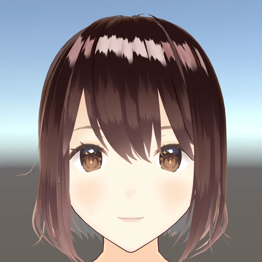
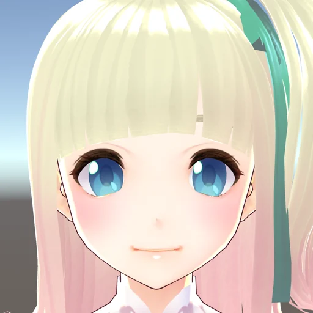
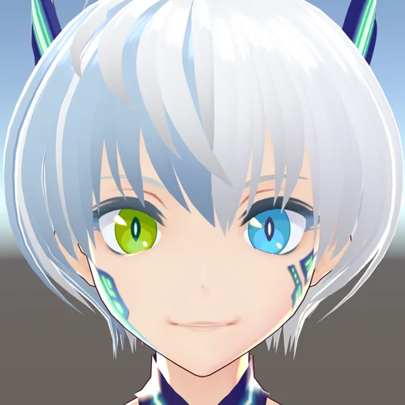

把资料放进柜子，把今天写在白板上。
正在准备见面…
小栖是实时渲染的 3D 人物。试着给她一个指令，或者直接和桌面互动。
网页中的笔记、待办、文件搜索与要点提取可以实际使用。当前使用本地指令规则，尚未连接语言模型，也不会操作电脑桌面或上传导入文件。清除浏览器数据会清除保存内容。
人物：VRoid / pixiv Inc. 官方示例模型模型及开源许可
前两版都留在这里，可以随时切换、对比。
当前：03 · 轻松步态
选择会记住；也可以关闭后单击空白处，让她走到你点的位置。
三种实时 3D 形象，保留各自的发丝、衣装和表情。



文件仅在本页使用；刷新后恢复内置形象。
这些功能现在就可以使用。点一下，或直接在底部告诉我。
当前为本地指令模式。自由聊天与语义推理尚未连接模型；文件要点来自原文提取。